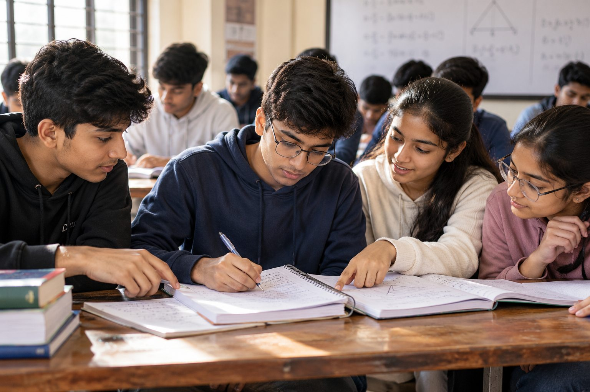
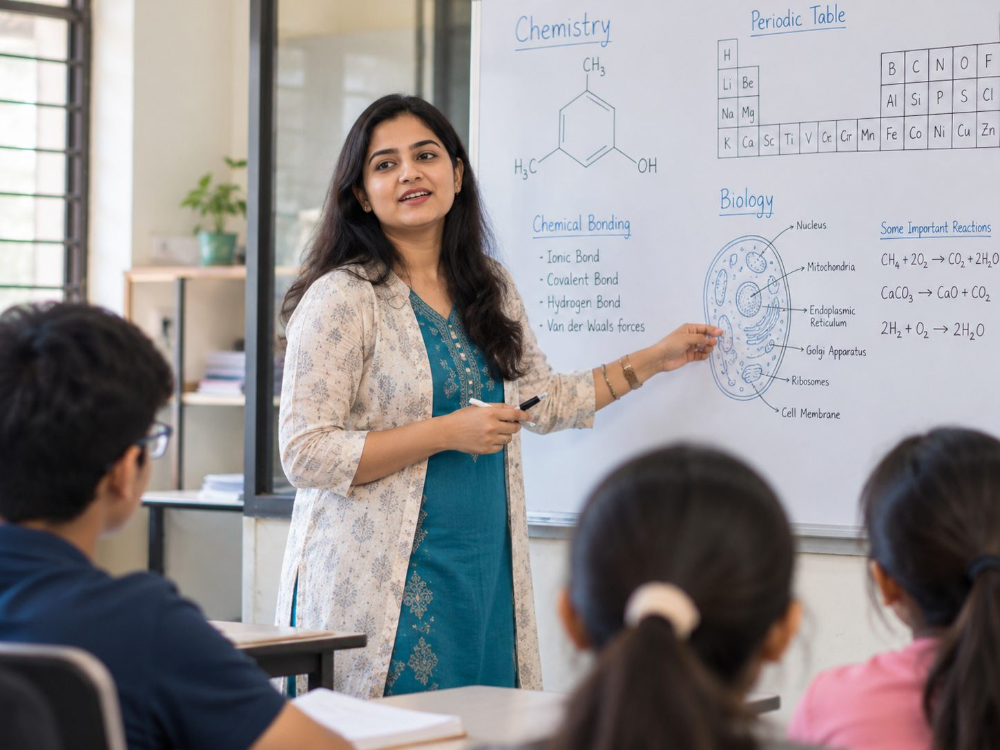
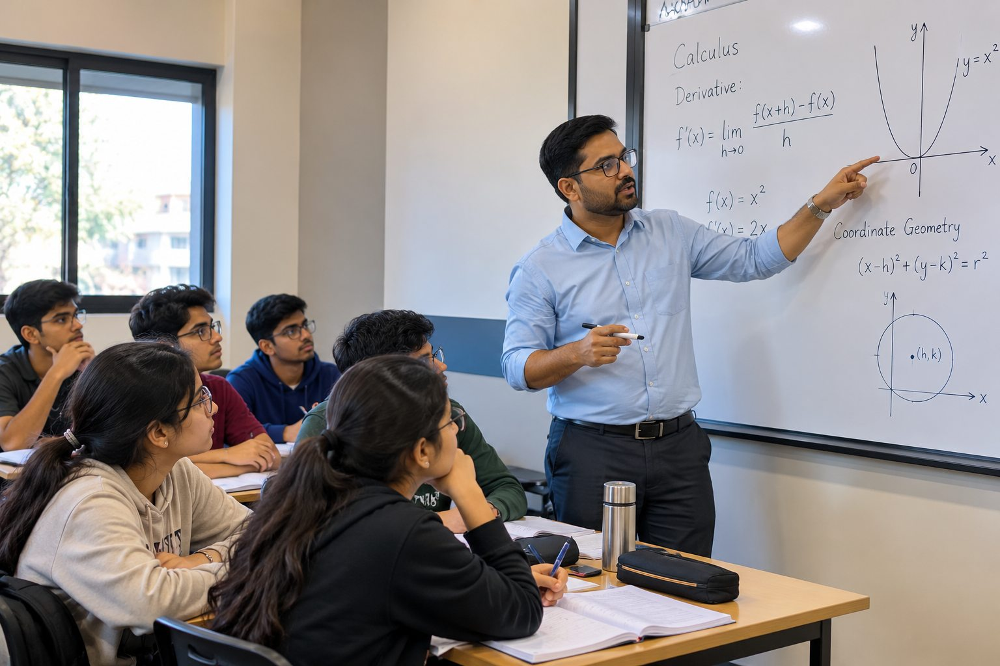
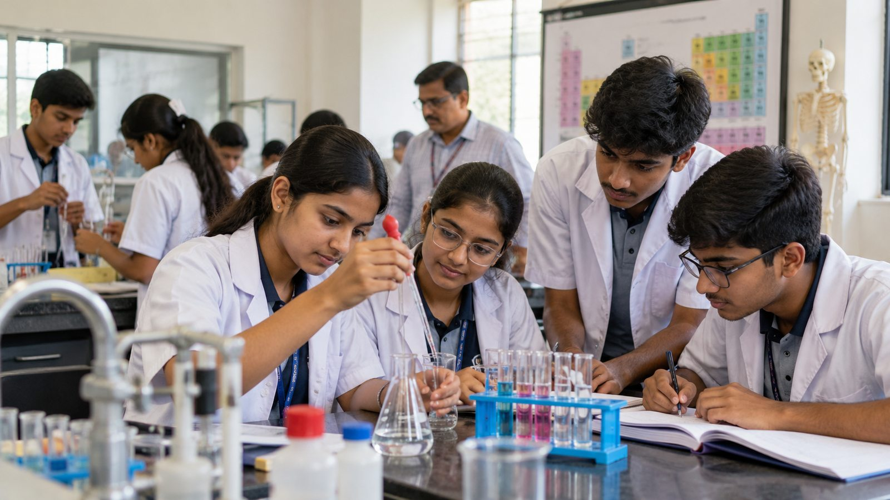

CLASS 6–8
FOUNDATION PROGRAM
Build the basics
Strengthen Maths, Science, reasoning and school fundamentals before moving to advanced concepts.
Explore foundation ↗CLASSES VI–XII • FOUNDATION • BOARD EXAMS • IIT-JEE
Speak to our academic team“नाम से नहीं, काम से Toppers — रिकॉर्ड उठाकर देख लो”
Class 6 से 12 तक school academics, Foundation, IIT-JEE और NEET की focused तैयारी — Maths, Physics, Chemistry और Biology में clear concepts और regular practice के साथ.
01 OUR COURSES
From building strong basics to preparing for competitive exams, explore a learning path that fits your class and goal.
Find the right course ↗Strengthen Maths, Science, reasoning and school fundamentals before moving to advanced concepts.
Explore foundation ↗
Focused academic support, revision plans, chapter tests and board-style question practice.
Explore board courses ↗
Structured support for Physics, Chemistry, Mathematics and Biology with board-focused practice.
Explore senior classes ↗Application-based Physics, Chemistry and Mathematics, supported by practice sheets, tests and analysis.
Explore JEE preparation ↗Biology, Physics and Chemistry preparation with topic-wise revision and regular mock tests.
Explore NEET preparation ↗Program names and features are demonstration content. The final course list can be tailored to the institute's actual offerings.
02 SUBJECT-WISE LEARNING
From school-level understanding to entrance-exam problem solving, students build confidence through a strong subject foundation.
Ask about batches ↗
MATHEMATICSArithmetic, algebra, geometry and higher mathematics with worked examples and question practice.
Explore Maths support ↗Concepts, diagrams, laws and numericals for school exams and engineering entrance preparation.
Explore Physics ↗
CHEMISTRYBuild clarity in reactions, equations, chemical bonding and problem-solving through revision.
Explore Chemistry ↗Diagram-led understanding, terminology, NCERT-based revision and medical-entrance practice.
Explore Biology ↗Course combinations and subject availability are sample content for this website concept and can be adjusted to the institute's actual teaching plan.
03 RESULTS & PROGRESS
A result page can bring board performance, entrance-exam milestones and student stories together in one transparent place.
Sample learner cards show how achievements could be presented. Replace with verified student names, exam year and consented results.
98.1 percentile Illustrative score
642 / 720 Illustrative score
95.4% Illustrative score
All numbers, student names and scores in this section are invented sample data for the demo—not actual institute results. Publish only figures verified and approved by the institute.
05 WHY SANKALP
Build confidence through clear fundamentals, guided application and consistent review — one step at a time.
Good preparation is a cycle: understand a topic, solve questions, review mistakes, then improve. Each stage deserves time and attention.
Explore student support ↗Build confidence in the basics before moving to complex applications.
Use weekly practice and mock tests to track topics that need attention.
Make it easier for students to ask questions and work through mistakes.
Use study modules, planned revision and test analysis to stay consistent.
04 MEET THE MENTORS
A thoughtful faculty section helps students and parents understand each teacher's subject focus and teaching approach before they visit.
Physics & Problem-Solving
Focuses on connecting laws, diagrams and numerical questions through step-by-step explanation.
Science & NEET Preparation
Emphasises clear theory, diagrams, revision methods and consistent objective-question practice.
Mathematics & Foundation
Builds fundamentals with worked examples, logical reasoning and progressive problem practice.
Faculty names, images and profiles are illustrative placeholders created for the demo. Replace them with institute-approved details before publication.
06 LEARNING SUPPORT
Show the academic support systems that help learners stay organised, practise consistently and understand the next step.
Classroom learning with flexible support options, where available.
Regular assessments to practise time management and question-solving.
Structured notes and practice material to reinforce classroom learning.
Competitive practice and exposure to exam-style questions, as offered.
Time to clarify concepts and revisit difficult topics.
A focused environment to study, revise and complete practice work.
Use test reviews and individual feedback to understand the next learning step.
A clear place to share progress updates and discuss student support, where offered.
07 PREPARATION PLAN
A simple learning cycle helps students understand where they are and what to work on next.
Understand theory, examples and methods.
Apply ideas through guided and independent questions.
Check understanding with timed assessments.
Find weak areas and plan the next revision.
08 ADMISSION ENQUIRY
Tell us the student’s class and learning goal. The academic team can help explain the available programs, batches and next steps.
09 FREQUENTLY ASKED QUESTIONS
Answers to common questions families may have before enquiring about a coaching program.
This sample website shows programs for Classes 6–12, along with IIT-JEE and NEET preparation. The final list can be adjusted to match the institute's actual courses.
Share the student's current class, academic goals and subjects of interest through the enquiry form. The institute can then guide you to the appropriate program.
The demo lists these as example features commonly offered by coaching institutes. Confirm the final schedule and inclusions with the institute before publishing.
Yes. Batch timings, fee details, availability and admission steps can be added after they are confirmed by the institute.
ONE STEP AT A TIME
Talk to the academic team about classes, courses and preparation goals.